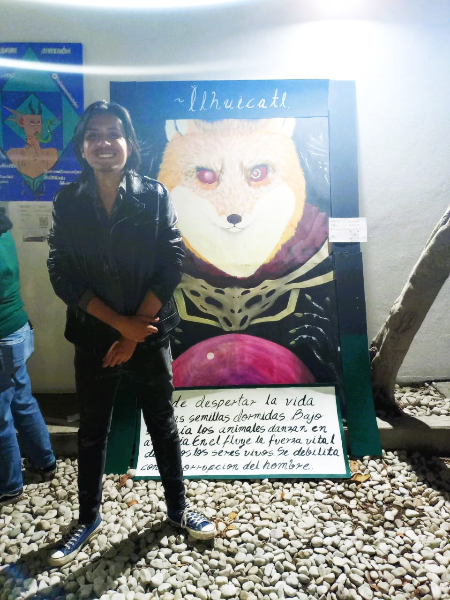
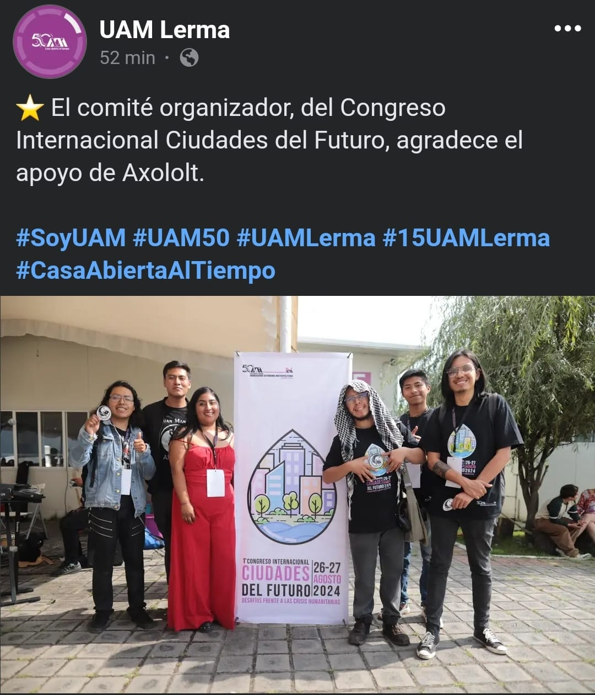

Soy Gerardo Arcos, un artista multidisciplinario apasionado por generar espacios que saquen a las personas de su cotidianidad y las inviten a reflexionar. A través de técnicas plásticas como la pintura y la escultura, así como del modelado 3D y la animación, busco explorar las fronteras entre lo físico y lo virtual.
Mi práctica artística se caracteriza por la experimentación constante. En mi proceso creativo, me sumerjo en la experimentación, permitiendo que las ideas y conceptos se desarrollen de forma orgánica. Me impulsa la necesidad de generar un impacto emocional en el espectador, de provocar preguntas y abrir espacios para la reflexión.
A través de mis obras, busco crear una conexión íntima con quienes las observan, invitándolos a explorar nuevas perspectivas y cuestionar su realidad.
En el futuro, aspiro a seguir expandiendo mi práctica artística, explorando nuevas tecnologías y medios que me permitan ampliar los límites de mi expresión creativa. Mi objetivo es contribuir al diálogo artístico y social, generando obras que provoquen cambios y promuevan la reflexión en nuestra sociedad.
En la segunda edición de la Galería Fantazy, tuve la oportunidad de presentar mi obra pictórica en un momento crucial de mi vida artística. Estaba atravesando un periodo de mucha incertidumbre y cuestionamiento, especialmente en mi carrera de Artes y Comunicación Digitales, donde algunas voces críticas me hicieron dudar de mi lugar en el arte. Entre el trabajo y el estudio, había perdido la conexión con la pintura. Sin embargo, este evento marcó un punto de inflexión: me motivó a retomar los pinceles, a seguir explorando mi camino. La temática de la galería, centrada en lo fantástico y lo sobrenatural, despertó en mí un interés que no había explorado antes. Fue la primera vez que me adentré en ese universo, y desde entonces ha sido una constante en mis proyectos. Pronto volveré a participar en la tercera edición de esta galería, con nuevas ideas que siguen alimentándose de esa fantasía que me inspira.
Durante mi tiempo en la Universidad Autónoma Metropolitana (UAM), he tenido la oportunidad de colaborar en varios eventos autogestionados por estudiantes de noveno trimestre. En uno de ellos, coordinamos una serie de ponencias de proyectos en curso, con el objetivo de motivar a las generaciones más jóvenes y a los nuevos ingresos de la carrera de Artes y Comunicación Digitales. El segundo fue un festival con un enfoque más lúdico, donde creamos un espacio universitario más ameno y cómodo, rompiendo con la rutina académica y favoreciendo la convivencia creativa.
Más recientemente, me integré como monitor en un proyecto cultural enfocado en la vida de los estudiantes foráneos, explorando cómo la universidad puede mejorar su experiencia y bienestar.
Este colectivo interdisciplinario, compuesto principalmente por estudiantes de la UAM, está comprometido con la preservación de los ecosistemas acuáticos, en especial los humedales. Mi participación en Axolotl ha sido tanto técnica como artística. Fui responsable de la programación de su página web y también presenté una obra en uno de sus eventos. Además, hemos organizado actividades comunitarias, como jornadas de limpieza en el humedal Norte de San Mateo. Esta mezcla de arte y activismo ha sido una experiencia enriquecedora, y actualmente seguimos planificando nuevos proyectos para concientizar sobre la importancia de estos entornos.
